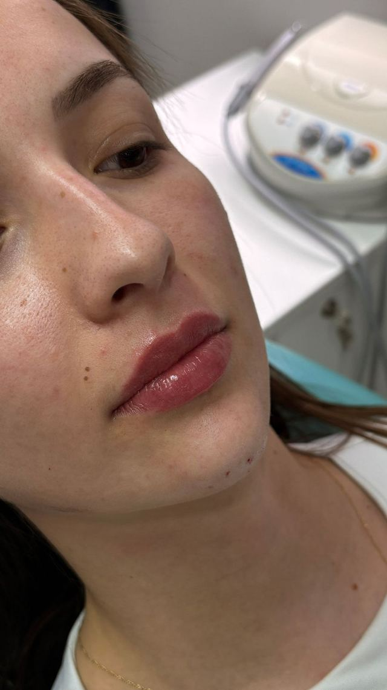

Biomedicina estética · Erechim e Florianópolis
Realçando sua beleza com naturalidade, técnica e planejamento.
Procedimentos personalizados para cada rosto.

O jeito Milena Vargas
Não é sobre exagero. É sobre proporção.
Naturalidade.
Você continua parecendo você. O resultado respeita os traços do seu rosto.
Técnica.
Cada aplicação é planejada ponto a ponto, com produto e lote registrados na sua ficha.
Planejamento.
Nada é feito no impulso. A avaliação define o que faz sentido, e em que ordem.
Procedimentos.
Seis tratamentos para o rosto e para a pele. Toque em cada um para ver indicação, duração e investimento.

Preenchimento labial.
Volume, contorno e proporção, sem perder a naturalidade.

Bioestimulador de colágeno.
Firmeza e qualidade de pele, com resultado progressivo.

Preenchimento facial.
Contorno e equilíbrio: mandíbula, mento, maçãs e olheiras.

Toxina botulínica. (Botox)
Suaviza linhas de expressão e previne o envelhecimento precoce.

Rinomodelação.
Correção estética do nariz sem cirurgia, com resultado imediato.

Limpeza de pele.
Remove impurezas e prepara a pele para outros tratamentos.
Como funciona.
Do primeiro contato à manutenção, você sabe exatamente o que vai acontecer.
Avaliação.
Uma conversa sobre o que te incomoda e uma análise do rosto inteiro, de frente e de perfil.
Plano.
Você recebe o plano personalizado: o que fazer, em que ordem e o investimento de cada etapa.
Procedimento.
Feito com hora marcada e tempo reservado só para você. Tudo fica registrado na sua ficha.
Acompanhamento.
Cuidados por escrito, retorno para avaliar o resultado e lembrete na hora da manutenção.
Resultados reais.
Antes e depois com a mesma luz e o mesmo ângulo, sem filtro.

Imagens de pacientes da Dra. Milena, publicadas com autorização. Resultados variam de pessoa para pessoa.
Duas cidades.
O mesmo cuidado em Erechim e em Florianópolis. Escolha a cidade na hora de agendar.
Dúvidas respondidas em vídeo.
“Será que é papada ou falta de queixo?” “3 coisas que deixam o lábio artificial.” Acompanhe @dra.milenazvargas.
Cada rosto pede um plano. Agende sua avaliação e entenda o que faz sentido para você.
Clique aqui e agende sua avaliação!